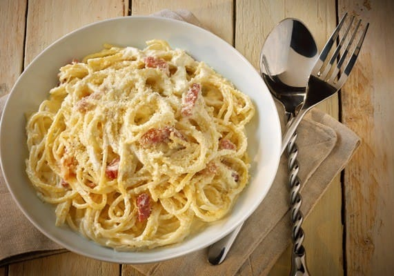

Faites-les revenir à feu vif dans une poêle anti-adhésive, ou une sauteuse, avec un filet d’huile d’olive extra-vierge jusqu’à ce qu’ils colorent légèrement. A cette étape, vous pouvez rajouter de l’ail coupé en dès et une feuille de thym.
Ajoutez la viande hachée (viande bœuf hachée ou chair à saucisse), sel et poivre et faites la cuire à feu vif pendant environ 5 minutes.
Versez ensuite les tomates pelées, le bouillon de bœuf, le sucre en poudre et laissez mijoter le tout à feu doux pendant environ 35 minutes tout en remuant la préparation.
Vous pouvez aussi faire votre sauce tomate maison et ajouter du basilic pour plus de goût !
Pendant ce temps, dans une casserole, ou une cocotte, chauffer une grande quantité d’eau salée avec un peu d’huile jusqu’à la porter à ébullition.
Plongez les spaghettis, dans cette eau bouillante en veillant à bien respecter le temps de cuisson recommandé sur le paquet.
Les Véritables Spaghetti à la Carbonara

Ingredients
Nombre de personne(s) à table
Poivre
Sel
15 g. de Parmigiano Reggiano
42 g. de Pancetta
1 jaune (s) d'oeuf (s)
75 g. de Spaghetti
Preparazione
Dans une grande casserole, portez à ébullition une grande quantité d’eau avec un peu d’huile, de sel et de poivre.
Faites-les revenir à feu vif dans une poêle anti-adhésive, ou une sauteuse, avec un filet d’huile d’olive extra-vierge jusqu’à ce qu’ils colorent légèrement.
Pendant que vous faites cuire les pâtes, découpez la pancetta et dorez celle-ci ou les lardons à sec dans une poêle antiadhésive pour qu’ils ne collent pas.
Mélangez les jaunes d’œufs, le sel, le poivre ainsi que le parmesan râpé.
Mettre dans une casserole à feu doux en mélangeant de façon à ce que les jaunes ne cuisent pas.
Ensuite, incorporez-les progressivement dans la casserole tout en remuant.
Servez en présentant rajoutant du Parmigiano Reggiano ou du Grana Padano
N’oubliez pas d’assaisonner avec un tour de poivre du moulin.
Les Farfalles au Saumon
Ingredients
Nombre de personne(s) à table
100 g. de Farfalles
33 g. de saumon fumé
83 g. de Mozzarella boule
1 oignon (s)
1 cuillère(s) à soupe d' Huile d'olive extra-vierge
Sel & Poivre du moulin
Vin blanc (Ne pas en abuser!!!)
Preparazione
Pour ce plat à base de farfalle, nous utiliserons de la mozzarelle boule , un fromage italien qui est célèbre dans le monde entier pour sa saveur et sa texture exquise.
Pour commencer, découpez ce fromage en petits dés sur une planche à découper, puis mettez-la dans une passoire pour évacuer autant que possible le lait (l’humidité).
Quand l’eau bout, faites-y cuire les farfalles pendant le temps indiqué sur le paquet.
Pendant ce temps-là, préparez la sauce.
Nettoyez les tranches de saumon frais et étalez-les sur un plan de travail, découpez-les en lamelles régulières et remettez-les dans un saladier. Réservez.
Ensuite, sélectionnez 5 feuilles sur le brin de basilic et lavez-les soigneusement sous l’eau courante, séchez-les avec de l’essuie-tout, et ciselez-les finement.
Mettez le basilic haché dans une petite assiette et posez-la sur un plan de travail dans la cuisine.
Prenez les petits oignons, pelez-les et lavez-les parfaitement.
Ensuite, essuyez-les et mettez-les sur une planche à découper et réalisez des tranches fines et régulières en utilisant un couteau bien affuté.
Prenez un fait-tout ou une casserole dont le volume est suffisant pour accueillir les pâtes cuites.
Versez-y quelques filets d’huile d’olive extra-vierge. Sinon, 3 noix de beurre pourront remplacer l’huile.
Sans laisser à l’huile le temps de se chauffer, ajoutez les fines tranches des petits oignons et laissez-les prendre une couleur brunâtre
Quand ils sont tendres et bien saisis, ajoutez les lamelles de saumon et laissez cuire quelques minutes, en remuant le mélange de temps à autre.
Déglacez cette sauce avec un verre de vin blanc et patientez jusqu’à ce que ce liquide soit réduit.
Passez un petit tour de moulin à sel et de poivre noir pour donner plus de saveur au mélange.
Pour une sauce plus consistante, ajoutez une bonne cuillère à soupe de crème liquide et mélangez bien la préparation.
Éteignez le feu, et laissez reposer la sauce ainsi obtenue dans le fait-tout.
Retirez les pâtes de la casserole et égouttez-les soigneusement avant de les incorporer dans le fait-tout avec la sauce au saumon.
Remettez le fait-tout sur le feu et mettez-y les petits dés de mozzarelle avant d’ajouter le reste de l’herbe pour donner une nuance verte au mélange.
Remuez le tout avant de retirer la préparation du feu.
Les farfalles au saumon sont délicieuses quand on les mange chaudes, donc il convient de les servir à table immédiatement après la préparation.
Faites vos pâtes vous-même c'est encore meilleur ;-)